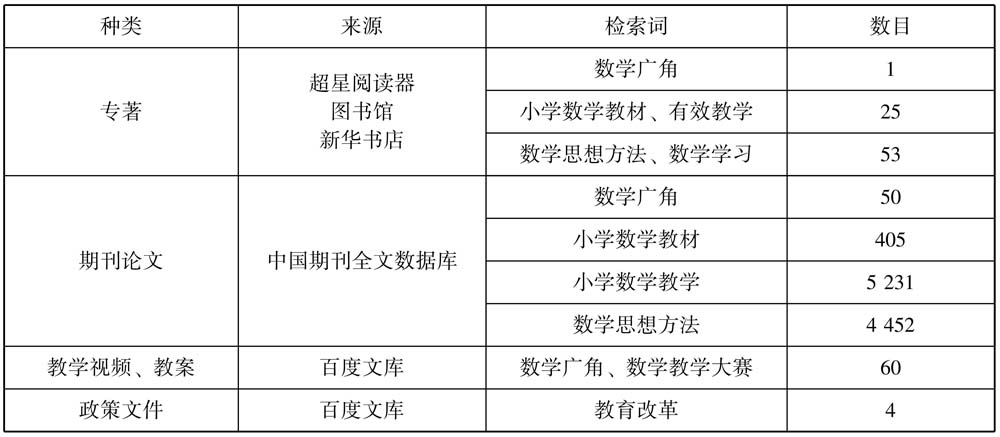
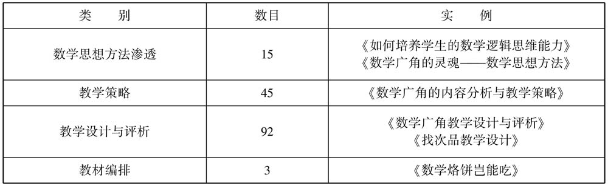

数学是人的一种活动，如同游泳一样，要在游泳中学会游泳，我们也必须在数学中学会数学。
——［荷兰］弗赖登塔尔（H. Freudenthal）
有研究表明，当今课堂的大多数教学活动都集中于让学生获得事实、规则和动作上，大多数课程学习的结果都停留在较为简单的层次上，主要是识记、理解和迁移应用。这样的教学情况，可能导致学生独立思考较困难，难以超越所学习的书本；没有教会学生对自身的意识进行反思和监控，使学生缺乏批判性思维和创新能力；不利于帮助学生形成自己的、有意义的思维方式。面对这些现实，教育家们从教学方法、课程、教学内容等方面进行改革。因此，该项研究以教学现状为视角，围绕课程改革多年之后数学广角的教学在数学课堂中是否发挥了预想的功效，小学数学思想方法的教学是一个什么情况展开研究，并围绕研究目的展开文献收集。这一章试图通过整理、分析国内外关于小学数学思想方法教学的研究文献和与数学广角直接相关的文献，为这项研究提供重要的理论基础和方法论指导。
围绕这项研究的核心——数学广角，根据这项研究的主题词——教学、数学课堂、数学广角、数学思想方法，最终将文献综述确定为两个方面，希望能有一个更为广阔的研究背景，得到更加全面的借鉴，在利于研究框架和问卷设计的同时，保证综述的范围是有效的。具体情况如下：
主题一：小学数学思想方法教学的研究。
主题二：数学广角教学的研究。其主要是聚焦于数学广角研究的发展、数学广角的选材、数学广角的教学设计与教学策略的研究、数学广角学习对学生的影响这四个方面。
以上两个主题之间是一个相互联系的整体，对这两个方面的文献进行收集和整理分析将有助于提高对研究主题的认识，为研究提供扎实的研究基础。
这一章共有五部分：第一部分是文献收集的途径；第二部分是对教学的内涵和外延的认识，有利于后继各研究的界定，避免在后面的研究中出现混乱与模糊不清的情况；第三部分和第四部分围绕相关主题对国内外的研究成果进行了综述；第五部分是小结。
在研究之初，通过多种途径收集文献。比如，郑毓信著的《数学思维与小学数学》，王永春著的《小学数学与数学思想方法》，吴正宪主编的《小学数学课堂教学策略》，马忠林主编的《数学学习论》，丁尔陞主编的《现代数学课程论》，［美］约翰·D·布兰思福特等编著、程可拉、孙亚玲等译的《人是如何学习的》，刘加霞主编的《小学数学课堂的有效教学》等，从这些专著中加深对数学教学、数学思想方法教学、有效教学概念本质的理解，并认识这些著作的脉络和思想，做好前期的准备工作。通过中国知网，以数学广角、教学研究、现状调查、数学思想方法、数学教材和鸡兔同笼等为关键词搜索相关文献，认真阅读，了解已有研究和相关研究的研究思路与方法。通过百度搜索与教学课程相关的政策文件、教学案例、教案等进行初步的阅读，形成整体的认识。文献总类和篇目具体情况如表2.1所示。
表2.1 与研究相关的各文献种类情况统计

从以上的统计可知，关于小学数学教材、数学思想方法的研究成果比较丰富，数学广角也受到研究者的关注。但是从总体上看，关于数学广角教学的研究成果并不多。
教学是一个常用词，几乎每个人都明白它的含义，在生活中都会或多或少地经历教学活动。有很多与教学相关的词，比如教学改革、有效教学、教学策略、教学结果、教学现状、教学水平等，只要是与教育相关的内容常常用这些词，但是对“教学”一词内涵的认识是一个复杂的循序渐进的过程。
从词源来看，在中文语义中较早出现“教学”的文献是《尚书·兑命》，其出现在“教学半”这句话中，之后被《学记》一书引用。但是有不少学者认为这里的教学与当今的教学含义是不同的，不是一个词，而是由两个词组成，分别是教与学，指的是两种活动，因此就有人将教学定义为：教与学的双边活动。从甲骨文的源流看，教也是源于学的，是一种督促或促进学生学的活动。教以学为中心，学以教为条件。而学则指“觉也，以反其质” [1] ，也就是不断地觉悟以回归到本性的过程。按照东汉时期学者许慎《说文解字》的解释：“教，上所施下所效也；学，原为敩，觉悟也”；觉悟互训 [2] 。这些解释反映出教学不仅指知识的传递与获得，而且包括引起学生积极的思想活动，达到更好的理解和实践原则的过程。孔子提出的“学而不思则罔，思而不学则怠”“不愤不启，不悱不发”，《学记》中提出的“道而弗牵，强而弗抑，开而弗达”，都是在强调教师教学中赢取学生积极的思想活动的重要性，反对机械、不理解、死记硬背。
在英文语境中，教学（Teaching and Learning，Instruction）这一词有着不同的含义。Learn这个词来自中世纪英语Lernen，它的意思是学习或者教导。而Lernen这个词又来自于盎格鲁－撒克逊语言，词干是Lar，Lar是Lore（经验知识）的词根。所以Learn的意思就是获取知识。在中世纪英语中，Learn与Teach是可以互换的，Teach的意思是通过某些符号或象征向某人展示某事物。Instruction的意思是堆积。综合以上的分析，英语语境中教学的古典意思是“传递与获得知识”。即以知识为核心，“教授”活动是获得知识的外在形式。
怎么给教学确定定义呢？定义是揭示概念内涵的逻辑方法。教学是教学理论的核心内容。在日常经验中，教师们一般将教学理解成教授、教书、教学生、教学生学，这四种认识呈递进的关系。他们从教学的单方面（教师、学生与教学的内容）分别对教学进行了定义。
根据我国学者对教学的研究，将教学的定义按用法总结归纳成五种类型：第一种为最广义的理解，“教学等同于人的生活实践”；第二种为广义的理解，“教学是有计划、有目的的全面影响活动，等同于教育”；第三种为狭义的理解，“教学是教育的基本途径，主要是传授和学习知识技能，影响学生身心发展的教育活动”；第四种为更狭义的理解，“教学等同于技能训练（在俄语中有此用法）”；第五种为具体的理解，“教学是指现实发生的具体的教学，如学校里每天的上课” [3] 。李秉德教授认为：“教学就是指教的人指导学的人进行学习的活动。进一步说，其指的是教和学相结合或相统一的活动 [4] 。”
从我国教学论的书籍所下的定义看：教学，即教师教学生认识客观世界，进而促进学生身心发展的教育活动。对这一定义做出解释，即教学是教师教学生认识客观世界的活动，此为教学概念的基本内涵；教学是追求和促进学生发展的活动，此为教学的基本价值；教学是教育的基本形式，是一种特殊的教育活动；教学的具体形态是变化发展和丰富多样的。《数学教学理论选讲》（唐瑞芬）一书中将教学定义为：“教学是指教师引起、维持以及促进学生学习的所有行为。”该定义重在体现教师的教，不能体现学生的学。
在西方，有关教学的定义也非常多。斯密斯在他撰写的《国际教育百科全书》中指出：“西方曾经给教学下的定义为：第一种定义是描述性的，教学即传授知识和技能；教学即成功是第二种定义，其强调的是学习者掌握了所教的东西；第三种定义把教学视为有意进行的活动，强调教学的目的性和明确意图；第四种定义认为教学乃规范性行为，强调教学要遵循一定的道德规范 [5] 。加涅的《教学设计原理》一书中提出教学是一项以帮助人们学习为目的的事业，是以促进学习的方式影响学习者的一系列事件。”
对比中西方有关教学的定义，在主观意向的强调、外部行为特征的描述以及对师生之间互动等一系列要素方面都比较接近，西方关于教学活动伦理条件的强调是我国学者描述中没有的，而在外部行为特征方面，西方学者没有我国学者描述的全面。通过以上对教学定义的梳理，明确了教学是师生之间的一种互动活动，包括教师、学生、教育影响，服务于国家教育目的的达成，有一定的评价标准，受到教师、学生、家庭、社会等多方因素的影响。
数学广角教学实质是数学思想方法的教学。因此，对小学数学思想方法教学研究成果进行整理和分析颇为重要。通过已有的文献了解小学数学思想方法研究的过去、现在和未来，有助于研究者建立一个全面的认识。这一节主要从数学思想方法的分类和教学原则方面进行综述。
数学思想方法是什么呢？目前的定义以解释性定义为主。数学思想是对数学知识本质的认识，是对数学规律的理性认识，是从某些具体的数学内容和对数学的认识过程中所提炼升华的数学观点、它在认识活动中被反复运用，带有普遍的指导意义，是建立数学体系和用数学解决问题的指导思想。例如，模型思想、极限思想、统计思想、最优化思想、化归思想、分类思想等；数学方法是以数学为工具，进行科学研究的过程中，所采用的各种方式、手段、途径等，包括变换数学形式等。我们认为，数学方法就是提出、分析、处理和解决数学问题的概括性策略。 [6] 对于数学思想与数学方法之间的关系，张奠宙教授曾写道：“二者实际上没什么区别，评价数学成就的地位、价值时，称数学思想；而用数学成就解决某个问题时，称数学方法。”
数学思想方法最早见著于古希腊数学家欧几里得的《几何原本》，在我国最早见著于数学家刘徽的《九章算术》。20世纪80年代初，G·波利亚的《怎样解题》 [7] 是研究数学思想方法的开端 [8] 。接着我国学者开始尝试翻译国外有关数学思想方法的著作，如美国数学家M·克来茵的巨著《古今数学思想》 [9] ，亚历山大·洛夫等人的《数学——它的内容、方法和意义》，日本数学家米山国藏的《数学的精神、思想和方法》。徐利治教授在大学数学系开设数学方法论课程，并于1988年出版了《数学方法论选讲》 [10] ，其可以说是植根于中国本土的数学教育创新。之后关于数学思想方法的研究不断深入，直到现在，化归方法、方程思想、数形结合、函数观念等已经成为大家耳熟能详的名词。数学教育界非常注重数学思想方法的教学研究，同时开展了数学思想方法的教改实验，如：上海市黄浦区数学方法论研究小组历时三年半的“关于数学思想方法训练序的研究”，以及在全国二十多个省市开展的“MM教育方式”实验研究，均对数学思想方法教学进行了不同侧面的探讨，在数学思想方法教学上取得了显著成绩。关于数学思想方法方面的专著也如雨后春笋般涌现，在翻译国外著作的同时，我国学者也出了很多专著。从20世纪80年代开始，主要有徐利治的《浅谈数学方法论》《数学方法论选讲》，张奠宙等人的《现代数学思想讲话》，解恩泽和徐本顺的《数学思想方法》，袁小明的《数学思想史导论》；2000年以后以论文为主，主要有凌晓牧的《从七桥问题中品味数学的思想方法》，郑毓信的《数学方法论入门》，徐唐藩和程子雄的《浅谈平面向量中的数学思想方法》，钱佩玲与邵光华的《数学思想方法与中学数学》，毛鄂婉和樊恺的《关于加强数学思想方法教学的思考》，郭刘龙和陈宇涛的《论数学思想方法的教育价值》，张承然的《数形结合培养学生思维能力》，朱成杰的《关于数学的思想方法教学的几点思考》等。这些著作，从不同的角度，多层次地对数学思想方法的教学进行了研究，这些著作有一些共同的特点：从宏观上对数学思想方法进行了研究，偏重于理论的论证，而很少有实践证明；在研究方法方面侧重于先理论分析后用例题论证的形式，研究内容上对一般的、普通的思想方法的研究比较多，而很少研究现代数学思想在数学教学中的渗透和应用 [11] 。本书将从数学思想方法的特征和教学的基本原则对数学思想方法进行分析。
1．数学思想方法的特征
数学思想方法是一种指导思想和普遍使用的方法。数学具有严谨性、逻辑性、简洁性、可靠性。对“数学思想方法”的研究有利于数学本身的发展，也有利于数学教学。根据数学家的研究，数学思想方法有以下特征：
（1）数学思想和数学方法是紧密联系的，可以分开称呼，强调指导思想时称数学思想，强调操作过程时称数学方法。
（2）数学方法的层次性。数学的发展是由低级到高级、从生活与客观现实逐步抽象发展起来的。数学知识是数学方法的载体，因为数学知识具有层次性，所以数学方法同样具有层次性。
（3）数学科学的特征和数学思想方法的发展阶段可以概括为创新阶段、理论建立阶段、应用阶段三个阶段。
2．数学思想方法教学的原则和教学基本途径
数学思想是数学内容的进一步提炼和概括，是以数学内容为载体的对数学内容的一种本质认识，因此数学思想方法是一种隐性的知识内容，要通过反复体验才能领悟和运用。数学思想方法是处理、解决问题的一种方式、途径和手段，是在变换的数学形式中不断实践才能理解和掌握的。针对如何进行数学思想方法的教学，我国学者满小莹提出四点建议 [12] ：数学思想方法教学的前提是不断强化教师的意识；数学思想方法教学的启动——深入钻研教材和教师教学用书；数学思想方法教学的关键——抓准、抓好知识与思想方法的结点；数学思想方法教学的实施——“点线面”教学。该学者提出的数学思想方法的教学方法对教学有很大的启发作用。由于数学思想方法教学的载体是数学知识，又有别于具体的数学知识教学，因此有学者提出数学思想方法的教学除了受到数学知识教学的影响外，还应遵循如下原则 [13] ：目标性原则、渗透性原则、层次性原则、概括性原则、实践性原则、计划性原则、科学性原则和重复性原则等。
在查阅相关文献的过程中，近年来有数篇文章从不同角度论述了关于数学思想方法教学的途径问题，可以做出以下概述：首先，在知识的发生过程中渗透数学思想方法，不能简单下定义和过早地给出结论；其次，要在教学活动过程中，逐步揭示数学思想方法；再次，通过问题解决方法的探索，掌握数学思想方法；最后，通过知识的总结，概括数学思想方法。
数学思想方法作为数学教育的重要内容，已经是人们的共识，在小学《数学课程标准（2011年版）》中从四个方面阐述了基础数学教育的总目标，其中“数学思考”和“问题解决”直接反映的就是对数学思想方法教学的要求。
“数学思考”的具体内容为：
（1）建立数感、符号意识和空间观念，初步形成几何直观和运算能力，发展形象思维与抽象思维。
（2）体会统计方法的意义，发展数据分析观念，感受随机现象。
（3）在参与观察、实验、猜想、证明、综合实践等数学活动中，发展合情推理和演绎推理能力，清晰地表达自己的想法。
（4）学会独立思考，体会数学的基本思想和基本思维方式。
“问题解决”的具体内容：
（1）初步学会从数学的角度发现问题和提出问题，综合运用数学知识解决简单的实际问题，增强应用意识，提高实践能力。
（2）获得分析问题和解决问题的一些基本方法，体验解决问题方法的多样性，发展创新意识。
（3）学会与他人合作交流。
（4）初步形成评价与反思的意识 [14] 。
从新课标中的描述可以看到，我国的基础教育非常注重数学思想方法的教学，让学生掌握各种数学思想方法，形成独立思考的能力，能够综合地运用数学知识解决问题，提高学生在生活中运用与实践数学知识的能力。《谈小学数学教学中的思维》一书围绕小学学习的主要内容并结合具体的案例讲述了如何以多种方法做到数学思想方法的教学：
（1）培养学生逻辑思维的一些做法：首先，运用感知材料，建立思维基础；其次，通过典型范例，掌握思维方法；最后，培养空间观念，发展抽象思维。
（2）运用发现法发展学生智力。
（3）通过讲清概念，发展学生思维。
（4）讲求精练，拓宽思路。
（5）精讲多思教学。
（6）运用阶梯法教学促进学生思维发展。
在《小学数学教学与逻辑思维能力的培养》 [15] 一书中，作者先把培养逻辑思维的目的、要求、方法介绍清楚，接着分板块地对在概念教学、计算教学、应该题教学中如何培养学生的逻辑思维进行了论述；《思维与数学教学》 [16] 一书又从另一个角度介绍了数学思维与教学，先是提倡把良好的数学思维列为教学目标，从思维的策略、思维结构与思维的意义展开说明，然后提出了改革课堂教学的结构，加强了数学思维方法教学；《数学教学思维导向的研究》 [17] 一书具体到如何在课堂教学中的各环节中来教学数学思维，并对数学思维教学的内涵进行了界定，最后还提出了相关的教学策略，比如展现了数学知识的发展历程，揭示了数学概念的数学本质，暴露了数学活动的思维过程，建构了数学知识的结构框图。《数学思维与数学方法概论》一书以数学思维、数学方法作为书的两部分内容，将数学思维与数学方法融合在一起的初步尝试以及紧密地结合了数学教学实践，使该书具有理论性与实践性。本书的具体内容还包括如何开发学生的逻辑思维、形象思维、灵感思维、数学创造性思维，以及建立数学体系常用的方法、数学中常用的主要方法、具体的运用等。相应地，可以从以下两方面对数学思维方法教学进行研究：一方面从培养学生的数学思维品质出发，在对各种思维或者是把思维的深刻性、灵活性、独创性、广阔性、敏捷性、批判性等思维品质进行详尽的描述之后，结合教学案例进一步说明怎么培养，在这些培养策略中一般都会有一题多解和变式训练；另一方面培养创造性思维，有的研究认为要加强发散思维的教学，有的研究认为要加强直觉思维，还有的研究认为教学中要发展学生的数学思维与方法就必须采用问答、讨论、发现、实验等启发式教学方法。
小学数学教材的编排以数学知识和数学思想方法为主线，注重数学思想方法的价值，将孤立的数学知识通过数学思想方法这条线逐步联系起来，使数学知识有了活力。尤其是在人教版小学数学教科书内编入了以渗透数学思想方法为目的的数学广角（在其他版本的小学数学教材中也编入了类似的章节）。
数学思想方法的教学逐步成为教师教学设计的指导思想。数学思想方法的教学是一劳永逸的教学，教师以此为教学的指导思想，有利于发展学生的数学思维和创新能力，在教学中能够事半功倍，即这是一种“授人以渔”的方法。
在渗透数学思想方法的基础上，已有研究表明：教师们主要是在教学概念、公式、法则和解题的过程中发展学生的数学思维。数学思想方法教学的重要性并没有引起教师们足够的重视。长期以来，我国数学的教学都以“双基”为中心，这对教师教学观念的影响很深，因此数学思想方法的教学不是很乐观。以“双基”为中心，其优势在于基础知识牢固，这也是中国在国际奥林匹克数学竞赛及国际数学比赛中取得好成绩的主要原因。但是这样的教学，以学生被动的接受、大量的变式训练为主，往往造成学生缺乏对数学本身的兴趣，在创新能力、设计方案、解决开放问题等方面没有优势。所以，在倡导培养创新型人才的今天，我国数学教育要在传统教学的基础上加强数学思想方法的教学，以培养学生的数学思维能力、创新能力。在提倡了数学思想方法教学二十多年后的今天，我们的小学教育在数学思想方法教学上积累了很多的经验，也认识到许多不足。
首先，在进入21世纪以来的一段时间里，人们对更多的教学方法、学习方式耳熟能详，在教育实践中也大力倡导“自主、探究、合作”的学习方式。这有助于培养学生的个性、发展学生的数学思维、培养学生的创新能力。而曾经的接受性学习、重复的训练，过于注重基础知识和基本技能成了教学中落后的代名词。教师们开始走上探索的道路，从一开始的怀疑、畏首畏尾、不知所措到能够很好地运用各种学习方式，尤其是在每一次的公开课上我们总能看到“自主、探究、合作”的学习方式。但是在这个过程中又有人开始怀疑了“我们是否真的要全部套用国外的学习方式而全盘否定中国数学教育的传统——‘双基’”。也有研究者不担心“双基”被丢掉，担心更多的是在真实的课堂教学里“双基”教学根深蒂固，而“自主、探究、合作”的学习方式只是有形无神，学了样子而没有学到精髓。因此，一部分人开始研究怎么样能够保证“自主、探究、合作”的有效性，一部分人开始研究怎么样把传统的“双基”与“自主、探究、合作”结合起来，在既能够保证取得原有成绩的同时，又能够在培养学生的数学思维与创新能力方面有所改进。
其次，已有研究显示：传统数学教学过程中更注重知识的传授，忽视学生的活动经验和知识发生过程中的数学思想方法的教学现象比较普遍，不少数学教师都对自己所教授知识中所蕴含的数学思想方法说不清楚，因此教师本人对题目理解不够透彻，分析得不够清晰，只能就题论题，造成学生陷于题海不能自拔，或者是将数学方法生硬地用语言表达出来，使学生感受到的数学思想方法没有活力。不管是数学思想方法还是创新能力，都必须要建立在良好扎实的基础知识之上，但是在以“双基”为主的数学教学中，让学生提出好的数学问题这个教学环节相对薄弱，将创新与基础知识教学结合相对缺乏，构建的数学模型与实际脱离，学生在生活中运用数学知识、数学思维等发散性方面不足。
最后，数学思想方法教学依旧薄弱，课堂上还是以“知识本位”为特征。中国数学教学有以下五个特点：注重教学具体目标；教学中善于由旧知引出新知；注重对新知识的深入理解；重视解题，关注方法和技巧；重视及时巩固、课后练习、记忆有法 [18] 。教学目标明确具体，可操作性强，目标的重点主要是知识性目标，关于情感态度方面虽有陈述，但是在操作中有明显的不足，造成了数学教育在思想启迪、精神感悟、人格塑造等发展目标上关注太少，导致教学中的目标与人的发展目标相割裂的状态。重视解题，认为解题是对概念和定理的再学习，强调解题方法的熟练掌握，主要是达到公式、结论必须准确记忆，快速反应，条件反射的目的。
综上所述，现在的数学教学，应以“双基”教学为主，再提倡和运用数学思想方法。但如何将这两者有效地结合，在教学中面临很大的挑战。数学教学找到了一种带有理论色彩的归纳和总结，先将各种题梳理出若干比较容易把握的数学规律。经过了对数学思想方法的梳理过程，学生解决数学问题的能力得到了一定程度的提高，并逐渐地养成了归纳与总结的习惯。但是数学思想方法的教学，在大多数场合，只是“画龙点睛”式的点到为止，主要是为了让学生进行必要的反思和体验，并不花费多少教学时间。这种数学思想方法的教学，已经形成了中国数学教学的一个亮点，也是区别于其他国家和地区的重要特征。荷兰的数学教育家弗赖登塔尔指出：“数学教育方法的核心是学生的再创造，教师不应该把数学当作一个已经完成的形式理论来教，不应该将各种定义、规则、算法灌输给学生，而应该创造合适的条件，让学生在学习数学的过程中，用自己的体验、用自己的思维方式，重新创造有关的数学知识。”
朱成杰 [19] 在普查了初中数学思想方法后，将数学思维分为三类：一类是宏观思维方法，包括抽象概括、化归、数学模型、归纳、猜想等；二类是逻辑型思想方法，包括分类法、完全归纳法、反正法、演绎法、特殊化方法等；三类是技巧型思维方法，包括换元法、配方法、待定系数法等。郑毓信在《数学思维与小学数学》 [20] 这本书中提到的数学思想方法，可将小学数学中的主要思想方法分为：符号化思想、抽象概括、化归思想、模型思想、推理思想、分类思想、分析与综合、反证法、数形结合思想和极限思想。可以看出小学数学思维以宏观思维方法为主。宏观思维方法是对数学基本知识、方法的本质认识，是学习或问题解决过程中隐藏于事实知识后面的内在方法。
符号化思想主要指人们有意识地、普遍地运用数学符号去表述研究的对象 [21] 。数学符号是数学的语言。数学世界是一个符号化的世界。数学作为人们进行表示、计算、推理和解决问题的工具，符号起到非常重要的作用 [22] 。在《数学课程标准》（2011版）中将符号意识作为数学课程的十大核心概念之一，并解读“符号是数学的语言，也是数学的工具，更是数学的方法。”也就是说，符号是一种数学思想方法。数学符号是在研究现实世界的数量关系和空间形式的情况下产生的，是现实生活的一种抽象概括，因此它具有简洁性和精确性。在已有的研究中，符号化思想的教学主要是让学生理解其本质，工整书写，明白符号的思想和实质。在小学数学教材中，符号化思想的渗透是一个循序渐进的过程，首先是数学符号的引入，接着是变元思想的渗透，然后是用字母表示数，最后是列方程解决问题。
化归思想：是指转化与归结的思想，即把待解决的问题，通过一定的转化过程，归结到一类已经能够解决或者是比较容易解决的问题中去，最终达到对问题的解答的一种思想方法。化归方法包括对象、目标、途径三个要素。应用化归思想时要遵循数学化原则、熟悉化原则、简单化原则和直观化原则。
在小学数学中，化归思想主要用于面对陌生问题。学生不能够直接地解决问题，需要综合地运用已有知识或者要创造性地解决问题的时候会用到化归思想。如，在求几何面积的时候进行割补平移变化。在小学数学的学习过程中，学生面对陌生问题时总是需要转换成熟悉的问题，因此化归思想有着广泛的运用。
模型思想：是一般化数学思想方法，指用数学语言、概括的话语近似地描述现实世界事务的特征、数量关系和空间形式的一种数学结构。广义的数学模型包括数学的概念、定理、规律、法则、性质、数量关系、程序等。模型思想在小学数学中的应用相对简单，但是不可或缺，尤其是在数学广角的教学中。
推理思想：是从一个或几个已有的判断中得出新判断的思维形式。推理所根据的判断叫作前提，所得到的结果叫作结论。推理一般分为演绎推理和合情推理。其中合情推理作为数学发现的一种重要方法，在小学的探究学习和再创造学习中应用非常广泛。关于演绎推理的描述虽然不是很严密、规范，但是在很多结论的推导过程中都会间接运用。
分类思想：是指人们面对比较复杂的问题，有时无法通过统一研究或者整体研究解决，需要把研究的对象按照一定的标准进行分类并逐步进行讨论，再把每一类的结论综合，使问题得到解决的思想方法 [23] 。分类思想具有有序、有层次、全面、有逻辑的思考特点，因此是培养学生良好思维品质的思考方法。
分析与综合：分析是把研究对象的整体分解为若干部分、方面和因素，并对其分别加以考查，找出各自的本质属性及彼此的联系；综合是把研究对象的各个部分、方面和因素的认识结合起来，形成一个整体性认识的思维方法。它们是相辅相成、辩证统一的两种思维方法。
数形结合思想：是通过数和形之间的对应关系和相互转化来解决问题的思想方法。就是在研究问题时把数和形结合考虑，把问题的数量关系转化为图形性质，或把图形性质转化为数量关系 [24] ，从而使原本需要通过抽象思维解决的问题借助形象思维更好地解决，有利于抽象思维与形象思维的协调发展和优化解决问题的方法。在小学数学中的应用主要有两种情形：一种是借助于数的精确性、程序性和可操作性来阐明形的某些属性，可称之为“以数解形”；另一种是借助形的几何直观来阐明某些概念及数与数之间的关系。在小学数学中主要是用形帮助学生解决问题，如数轴与平面直角坐标系在小学数学中的渗透，统计图与几何概念模型的应用；用代数算法解决几何问题、解决数学广角中的大部分问题。
已有研究概述是数学广角这项研究的直接基础，只有对已有研究的内容、思路了解后，才可能找到对该研究的启迪。这一节对数学广角的相关研究做梳理，将研究内容作为分类依据，以“数学思想方法渗透”“教学策略”“教学设计”“教材选材”四个已有研究维度进行论述。
在中国，“教科书”一词的出现始于19世纪70年代。1877年来华传教的基督教传教士成立了学校教科书委员会。1897年上海南洋公学编辑的《蒙学课本》（共三册）是近代中国最早正式出版的具有教科书体例雏形的自编书籍。顾明远先生在《教育大词典》（增订合编本·上）一书中对教科书的界定是：教科书亦称“课本”“教本”。教科书是根据各科教学大纲（或课程标准）编写的教学用书，是教材的主体，是师生教学的主要材料、考核教学成绩的主要依据、学生课外扩大知识领域的重要基础。教科书通常按学年或学期分册，划分为单元或章节。对于中小学而言，教材通常是指师生共同使用的教科书。
教材是教学内容的载体。小学教材是教学思想、国家意志的体现。小学数学教材是小学数学应该学什么、什么知识最有价值的思考的具体体现。我国的数学教育受到苏联的深刻影响，建立了重视基础知识教学的小学数学教学体系。随着国际数学教学的交流、数学教学研究的深入和社会对人才的需求，我们国家的数学教育家、一线教师们对小学数学重新进行审视，进而从非常重视计算而忽视数学思想方法，转向同时注重数学思想方法，开始发展既注重基础知识又能培养学生的数学思想方法、创新能力的教学。数学思想方法的渗透不能够脱离知识而独立教学，因此能够渗透数学思想方法的内容就进入了各版本的教材，其中人教版的小学数学教科书中就编进了12个学习专题，并命名为数学广角。数学广角的内容是解决问题的集中编排，同时它在发挥渗透数学思想方法、积累数学活动经验方面具有不可取代的作用。同时，根据多年教学实践的反馈得知，教师们对数学广角的编排几乎都是肯定与赞扬的。
在搜集有关数学广角的文献时，直接以数学广角教学现状研究为检索词的文献没有，在以数学广角为检索词进行搜索时，发现关于数学广角教学方面的研究成果大多散落于单篇的论文中。2014年3月，通过中国期刊全文数据库对数学广角的相关期刊论文进行检索与统计，以数学广角为检索词进行搜索时，在中国知网与之匹配的论文有50篇，万方数据库与之匹配的有11篇。接着以搭配问题、逻辑推理、找规律、重叠问题、烙饼、植树问题、数字编码、找次品、鸡兔同笼、抽屉原理等分别作为检索词进行搜索，属于数学广角范畴的论文情况为：找规律38篇，重叠问题2篇，烙饼5篇，植树问题11篇，数字编码2篇，找次品7篇，鸡兔同笼24篇，抽屉原理4篇，搭配问题1篇。从以上数目统计得出，关于数学广角研究的论文不足200篇，关于找规律和鸡兔同笼的研究最多。它们的研究内容主要涉及数学思想方法渗透、教学策略、教学设计与评析、教材编排，具体情况如表2.2所示。
表2.2 数学广角研究内容分布

现将主要观点概述如下：
1．小学数学广角教学的现状
通过检索，可知教学中几乎没有与数学广角教学相关的调查研究，只有一些相关教学理念散落在一些期刊论文中，如雷晓红在《从生活中来，到生活中去》 [25] 一文中写道：“教师在数学教学中应尽力做到数学课程生活化，也就是在数学课程中，从学生的生活经验和已有的知识背景出发，联系生活学数学，把生活经验数学化，数学问题生活化，将数学课程变为学生认识生活、认识数学的活动，而体现‘数学源于生活、寓于社会、用于生活’的思想。”在张牡玉《打造有效评研课堂，促进学生思维发展——数学广角（抽屉原理的教学实践与反思）》 [26] 一文中提倡以学生的发展为中心，突出学习兴趣的激发和合作学习，放手让学生在探索中理解数学，体现了学生在数学中的主体地位。但是关于教师在数学广角中相关知识的获取方式、教学的设计与理念等方面的研究几乎没有。
总之在整体上，小学数学广角的教学研究处于一种零碎的状态，教师们的经验，教师之间的交流主要通过“同课异构”而获得，缺少一定的理论指导，而且由于没有总结，实践经验不能够被更好地交流和得到验证与发展，通常处于感性水平。
2．小学数学广角教学文本解读的研究
覃贤和韦芳在《教师数学广角问题与解决策略》 [27] 一文中探讨了数学广角的编写意图及特点，小学教师非专业的较多，也就是数学专业素养不够，其不知道如何在教学中渗透数学思想。关于如何提升教师在这一块的教学能力，文中给出的建议是：多学习、反思和行动研究。江建忠在《浅谈数学广角对学生创新意识的培养》 [28] 一文中论述了数学广角的编排设计是按照培养学生创新意识的目标要求，以形式的新颖性和内容的独特性呈现出来的，打破了旧教材的封闭性，将数学思想与其他学科思想有机融合起来，形成了开放的、创新性的教材形态，为学生的创新性学习提供了平台。
3．小学数学广角教学策略的相关研究
姜常君和刘静霞在《小学数学教学中数学思想方法的渗透》 [29] 一文中探讨了如何在课程讲授过程中落实渗透数学思想方法的策略；首先，充分交流，在解决问题中感悟数学思想方法；其次，亲历过程，在自主探究中体验数学思想方法；最后，梳理提升，在巩固运用中提炼数学思想方法。
4．小学数学广角教学设计的研究
黄世好在《信息技术在小学数学广角教学中的应用》 [30] 一文中提出了信息技术与小学数学教学整合可以优化练习，从而使学生思维得到进一步的发展；练习既是学生掌握知识形成技能的基本途径，又是运用知识发展技能的重要手段，学生需要有坡度、多角度、多层次的练习，在学生练习巩固所学的知识时可以利用多媒体技术省时、容量大、利于拓宽思路的特点来强化练习效果，提高练习效率。所以，多利用多媒体有利于增加课题的效率和增加学习的兴趣。
从邓丽坤《神奇的身份证编码》 [31] 、蒋玉蓉《数学广角教学设计》 [32] 、秦和平和李梅先《对“搭配中的数学”活动设计的思考》 [33] 到张卫星《植树问题教学设计及说明》 [34] 、林清《找次品教学设计》 [35] 等文章中可以看出，教学设计基本都是基于《数学课程标准》的要求和教材选材、编排特点来定出教学目标和重难点，设计教学过程的。
5．小学数学广角教学的相关研究
对有关数学广角的文献进行了一定的梳理，发现关于数学广角的文章大部分集中在某一个内容的某个课时的教案分析，而没有一个完整的系统的论述（整个内容是什么，从哪里来的，要到哪里去，我的学生是什么样的，学完了相关内容后他能获得什么样的数学思想）；还有不少的教案，目标定位不合理，教学过程还在经验的层面上，没有做到数学化。此外，没有关于探讨教学现状的文章，只能从各教案和其他论文中有所了解，老师一般有数学广角是难点的意识，也明白数学广角的意图是渗透数学思想方法，但是不知道要怎么样找到学生生活和所教授内容的结合点，而且当问题的表征发展改变之后，学生就不能灵活运用所学习的知识。在这些文献中，更没有文章涉及学生是怎么学的，学生的思维在学习相关内容时是一个什么样的特点，在学习的过程中会有什么样的困难，然后这些困难都是怎样克服的等问题。总的来看，作为问题解决集中编排的一个版块，关于数学广角教学理论、教学策略、学生学习情况、教学评价等方面的研究都非常薄弱，大多显现出分布零散、经验化、雷同等特点。
在《数学广角学什么与教什么》 [36] 一书中，作者从数学思想方法的教学出发，以教科书单元作为分章依据，对教学目的、编者意图、教学分析进行了独到的说明，同时附有相应的教学案例和教学评价。作者还提倡加强该部分教学的实践研究，但是书中的一些观点，比如数学广角没有具体的知识传授目标，不是很客观。就如有学者说过，所有课程都是由人类思想所创造，它们由思想形成、组织、分析、合成、表达、评价、重建、供养、改造，也需要通过思想来学习、理解并运用，如果试图把思想和知识分开，那么将什么都得不到 [37] 。
总之，对数学广角教学的认识还处于较浅的层面；关于数学广角教学的理论研究相对薄弱；教学中存在着实施不当，建立的模型不统一，也就是有错误的情况发生等问题；对数学广角所蕴含的思维渗透不到位；在数学思维方法研究综述里谈到的问题在数学广角的研究中同样存在，即数学思想方法渗透不足，教师们存在各种困难。
在这项研究中，数学广角是研究的核心，是数学思想方法渗透的主要载体。对已有的数学思想方法教学和小学数学广角教学研究进行梳理，为该项研究提供理论参照和研究视角，有利于探讨数学广角教学中的各种问题，从而为小学数学思想方法教学的实践研究做一些实事。
出于这样的初衷，这一章在文献综述范围确定之初，就围绕“小学数学思想方法教学”“小学数学广角教学”这两个主题进行综述。由于个人收集文献资料的能力有限，难免有遗漏的地方，因此在整理文献的过程中也出现了概括不全面、认识不到位的情况。总体而言，本章涉及的文献揭示了以下四点内容：
第一，小学数学思想方法教学同小学数学广角教学是相互关联的。小学数学思想方法的种类被分散编排于数学广角内，并且在小学数学思想方法研究中，有研究者将数学广角的教学片断作为例子使用。在有关数学广角的论文里，以渗透数学思想方法为内容的文献居多。
第二，关于数学广角教学的研究逐渐增多，且大多数以教学设计、课堂实录为主，成为了解数学广角教学设计观念、教学实践的窗口。但是大多数的研究内容来自公开课和优质课，对一线教师的教学认知和学生学习情况的了解太少，不利于对数学广角教学现状的了解，且大多数研究都处于感性认识阶段，需要进一步整理和深入研究，促使认识加深。
第三，从数学思想方法教学来看，当前数学思想方法的教学很受重视，出于“双基”的传统和数学思想方法本身特性的原因，在小学数学课堂里教师们多数以计算（重视技能的体现）为主，而数学思想方法成为一种特意的点缀，即使在不少文献里看到数学思想教学的方法和建议，也都是理论研究，实践方面的研究较少。从这个角度来看，了解教师落实数学思想方法教学的情况和不能很好落实数学思想方法教学的深层原因很有必要。
第四，数学广角是小学数学思想方法教学的主要载体，从数学广角教学的角度探索小学数学思想方法教学的状况，找寻教师教学中的困难和阻碍数学思想方法的教学是一种创新的研究视角。这样的研究有助于小学数学思想方法教学的改革。
[1] 《礼记·王制》。
[2] 臧克和，王平．说文解字（新订）［J］．中华书局，2002: 205－206.
[3] 王策三．教学论稿［M］．北京：人民教育出版社，1985.
[4] 李秉德．教学论［M］．北京：人民教育出版，1991.
[5] 中央教育科学研究所比较教育研究室编译．简明国际教育百科全书．教学（下册）［M］．北京：教育科学出版社，1990.
[6] 孙巍．在数学教学中渗透数学思想方法的探索与实践［D］．上海：上海师范大学，2007: 4.
[7] G·波利亚．怎样解题［M］．徐泓，冯录天，译．北京：科学出版社，1982.
[8] 张奠宙．中国数学双基教学［M］．上海：上海教育出版社，2006.
[9] M·克莱因．古今数学思想［M］（1－4册）．上海：上海科学出版社，1979.
[10] 徐利治．数学方法论选讲［M］．武汉：华中工学院出版社，1993.
[11] 燕学敏，华国栋．国内外关于现代数学思想方法的研究综述与启示［J］．数学教育学报，2008，17（3）: 84－87.
[12] 满小莹．初中数学思想方法探微及教学探讨［J］．教学与管理，1999，5: 46－47.
[13] 臧雷．数学思想方法教学原则自议［J］．中学数学，1997，7: 17－20.
[14] 中华人民共和国教育部制定，数学课程标准（2011年版）［M］．北京：北京师范大学出版社，2012.
[15] 金成梁．小学数学教学与逻辑思维能力的培养［M］．南京：江苏人民出版社，1983.
[16] 郭思乐．思维与数学教学［M］．北京：人民教育出版社，1991.
[17] 杨孝斌．数学教学思维导向的研究［M］．成都：四川大学出版社，2010.
[18] 张奠宙．中国数学双基教学［M］．上海：上海教育出版社，2006.
[19] 朱成杰．数学思想方法教学研究导论［M］．文汇出版社，1998.
[20] 郑毓信．数学思维与小学数学［M］．南京：江苏教育出版社，2008.
[21] 王建，程宏．符号化思想与小学数学［J］．学科教学探索，2006（10）: 41.
[22] 王永春．小学数学与数学思想方法［M］．上海：华东师范大学出版社，2014.
[23] 王永春．小学数学与数学思想方法［M］．上海：华东师范大学出版社，2014.
[24] 曹一鸣．数学教学论［M］．北京：高等教育出版社，2008.
[25] 雷晓红．从生活中来，到生活中去［J］．基础教育，2007（1）: 35－37.
[26] 张牡玉．打造有效评研课堂，促进学生思维发展——数学广角（抽屉原理的教学实践与反思）［J］．教师观点，2012（11）: 116.
[27] 覃贤，韦芳．教师数学广角问题与解决策略［J］．中国教育学刊，2011（11）: 89.
[28] 江建忠．浅谈数学广角对学生创新意识的培养［J］．南昌教育学院学报，2009（2）: 63.
[29] 姜常君，刘静霞．小学数学教学中数学思想方法的渗透［J］．延边教育学院学报2010（1）: 106－108.
[30] 黄世好．信息技术在小学数学广角教学中的应用［J］．教育导刊，2009（3）: 61－62.
[31] 邓丽坤．神奇的身份证编码［J］．教育实践与研究，2009（7）: 95－97.
[32] 蒋玉蓉．数学广角教学设计［J］．中国电化教育，2006（9）: 69－70.
[33] 秦和平，李梅先．对“搭配中的数学”活动设计的思考［J］．教学与管理，2007（7）: 37.
[34] 张卫星．植树问题教学设计及说明［J］．教学与管理，2009（3）: 55－56.
[35] 林清．找次品教学设计［J］．教学与管理，2009（4）: 58－59.
[36] 丁丽．数学广角学什么与教什么［M］．北京：北京理工大学出版社，2014.
[37] ［美］查理德·保罗，琳达·埃尔德．批判性思维［M］．乔苒，徐笑，译．上海：华东师范大学出版社，2006.